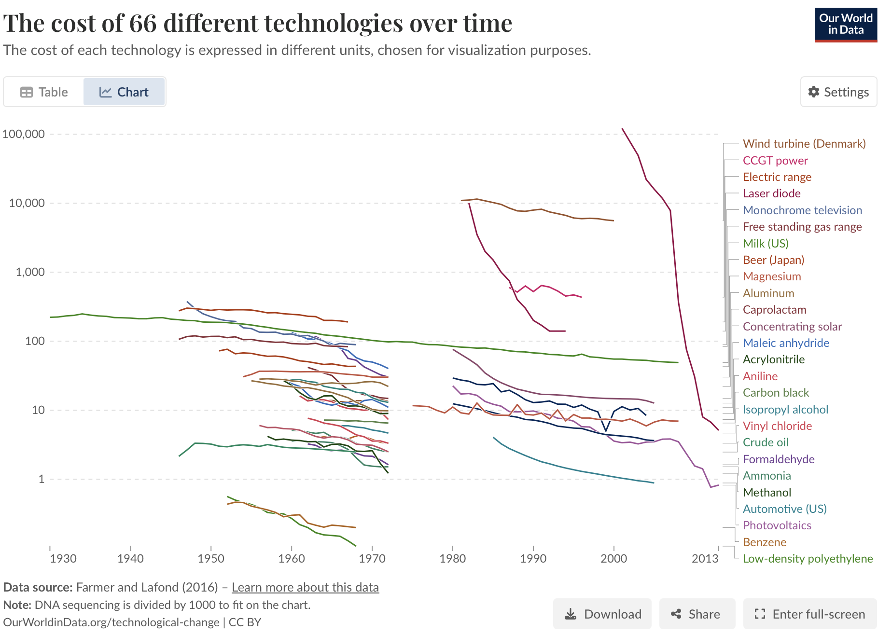
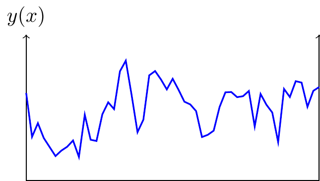

Last week I went to two workshops: the Windfall Trust’s “Economic Scenarios for Transformative AI” and the NBER’s “Workshop on the Economics of Transformative AI.
They were great workshops, it was a thrill to hear peoples’ thoughts and argue with them about AI. I had just left OpenAI’s Economic Research team, & we had just released our paper, How People Use ChatGPT.
General Observations
- We are driving in fog.
-
My personal view: (1) it’s possible that AI will get very good soon; (2) it’s hard to know what would happen if it does.
I think the appropriate attitude is high uncertainty about both parts. We are driving in fog: it’s possible we have miles of open road, it’s possible we’re about to hit a tree. It seems sensible to be prepared for both outcomes.
- The standard model.
-
There’s a standard set of ideas which have been circulating in AI circles for the past decade. This is an important context for the nature of the discussion.
- AI will soon be able to replicate most human labor.
- There will be mass unemployment.
- AI firms should fund a universal basic income.
Academic economists tend to bristle at the first two points:
- Economists are generally skeptics about AI progress, or have been until recently.
- Economists argue (i) there are many frictions which prevent rapid changes; (ii) even if computers were better at everything than humans, there’s still comparative advantage; (iii) new technology tends to automate old tasks but also create new tasks for humans.
- Many economists avoided talking about transformative AI.
-
Both workshops were intended explicitly for discussion of a hypothetical: what would happen if AI capabilities keep increasing?
Most of the economists resisted the hypothetical. If you look at the NBER papers about half are effectively discussing the effects of AI with 2024-level capabilities, not the effects of transformative AI.
Why? People gave a few different reasons: (1) they were doubtful that AI would improve very quickly; (2) they thought the economics of actually existing AI is more important; (3) they thought the economics of superhuman AI was formally less interesting; (4) they thought it was important, but were nervous about being perceived as overly credulous.
- The field still seems a little inchoate.
-
It seems to me that the field of economics-of-AI is still pretty open:
There is no standard way of modelling AI in economics (see more on this below).
There is no commonly accepted definition of Artificial General Intelligence, or Superintelligence, or Transformative AI.
There are relatively few canonical models in the economics of AI. The closest are perhaps: (1) the Zeira (1998)/Acemoglu and Restrepo (2018) task-based model of automation, in which capital is used to perform human tasks; (2) the Aghion, Jones, and Jones (2019) model of automation’s effect on economic growth.
Brynjolfsson, Korinek, and Agrawal (2025) is a “research agenda for the economics of transformative AI”: it’s striking that it lists many good questions but cites relatively few papers, and the papers it does cite are generally treated as only conjectures.
- I don’t think people appreciate the speed of AI improvement.
-
Speakers gave various examples of things the models still couldn’t do: (1) solve ARC-AGI puzzles; (2) extrapolate world models; (3) operate vending machines. These are all reasonable examples of limitations as of September 2025, but we should at the same time mention the rate of change. It seems very likely that the primary examples of tasks that AI cannot do in 2025 will turn into tasks that AI can do in 2026 (the same was true in 2024 and 2023).
Some general observations about the rate of progress:
- ARC-AGI is falling quickly. Over a year performance on the original ARC-AGI went from around 10% to 80%, and over a few months performance on ARC-AGI-2 went from around 3% to 30%. It’s true that a large part of the performance improvement was due to writing wrappers, but the models can write their own wrappers, so it seems likely they’ll be able to solve the class of problems which can be addressed by LLM plus wrapper.
- Benchmarks are falling rapidly. It typically takes around 18 months for benchmark performance to go from 25% to 75%.
- Consumer utility is growing dramatically. People far prefer answers from newer chatbots to older chatbots. The Elo score of models on chatbot arena is growing at around 200 points/year. This implies about a 75% win-rate, and equivalent to the difference in skill between the top-rated chess player in the world and the player ranked 100.1
- The AI pessimism has mostly evaporated.
-
Over summer 2024 many economists predicted that AI would have small economic impacts:
- Acemoglu predicted AI would cause 0.06% incremental productivity growth over the next 10 years.
- Josh Gans said “I don’t think it will boost growth appreciably” over the next 10 years.
- Robert Gordon predicted small effects.
- Paul Romer predicted small effects.
I have heard much less of this kind of talk in 2025.
- Economists have been modeling diffusion but diffusion is not important.
-
Two quantitative forecasts of AI’s GDP impact are Acemoglu (2024) (0.06%/year) and Aghion and Bunel (2024) (1%/year). Both of those papers model AI’s future economic impact as primarily a diffusion process: they treat the arrival of AI as a one-time shock like electricity or the steam engine which is gradually adopted.
I think this a bad assumption, it ignores the primary reason why we should expect growth.
We could decompose the growth in economic impact over a given period into (i) quality growth; (ii) diffusion. It’s very difficult to separate these, but I think it’s a reasonable guess that growth over the last 12 months (Sept 2024 to Sept 2025) is about 1/2 diffusion of existing capabilities, and 1/2 the causal effect of new capabilities (precisely: that growth would’ve been half as large if capabilities had been frozen in Sept 2024). If this is true then a forecast which was just based on the diffusion of existing capabilities would have dramatically under-estimated the impact of AI, and the gap would become larger as the horizon got longer.
How would you write a quantitative forecast which included growth in AI capabilities? I think it’s much more difficult because you need to be more opinionated about the nature of AI capabilities and how it’s growing (see below for some discussion about modelling capabilies).
- We avoid asking where preferences come from.
-
Economists treat everything as an engineering problem: if we know the shape of preferences, and the shape of the technology, then we can get a sense of tightly one will fit into the other, and whether we should be interfering. Thus we spend a lot of time discussing peoples’ preferences: labor vs leisure, goods vs services, in-person vs remote.
We don’t often talk about where those preferences come from. But we do know where they come from: mostly from evolution (we are hard-wired to prefer things that were correlated with survival), and the rest from socialization (we learn to prefer things that we saw our parents prefer).2 But we don’t discuss this much.
What does this mean for transformative AI: (1) that the preference-maximizing utopia might not look intuitively like a utopia, e.g. maybe it would be people self-stimulating their pleasure receptors; (2) that different societies would choose different utopias, and there’s no principled way to choose between them.3 Different societies have already chosen to use their additional surplus in very different ways: to have more children; to devote more time to praising and glorifying god; to have more time at leisure; to consume more goods and services; to live heroically. If you grow up in such a society your preferences harden and it’s hard to take on the ideals of another one.
I think this is all tacitly understood: maximizing preference-satisfaction doesn’t bear looking into too deeply. But we go on with it anyway. We’re like a synod of cardinals, only half-believing the dogma, but thinking it does some good to debate and argue as if it’s true.
- We’re removing a wall and we don’t know if it’s load-bearing.
-
We write down precise equilibrium models of the economy but it’s generally understood the models only roughly match aggregate statistics, and there are very many puzzles that economists argue over: about growth, the equity premium, lifecycle savings, the equilibrium size of firms, & heterogeneity in productivity. It is easy to exaggerate how accurate these models are at predicting causal effects, and in fact structural models typically underperform black-box models for forecasting. We are now going to make some drastic changes to the production function, and predict how equilibrium will change.
Facts about AI today
- Chatbot use has exploded.
-
Around 1/3 of adults in rich countries are regularly using chatbots (ChatGPT, Gemini, Claude), and this is the primary economic impact of LLMs.
This was not obvious a few years ago: many people expected LLMs would have widespread adoption in doing tasks autonomously, without human review, e.g. responding to customer inquiries, data entry, translation. A natural interpretation is that LLMs are not yet reliable enough to operate without human oversight, but they are enormously helpful as advisors.
- Chatbots are mostly home production.
-
The ChatGPT paper that we released last week showed that 2/3 of queries appear unrelated to paid work, and that the types of queries are very broad. I would broadly characterize them as solving practical problems.

We don’t have a standard model of AI.
- Every conclusion depends on assumptions about machine intelligence.
-
Each of the papers in the NBER workshop used some assumption about how AI changes the production function, but there were many different assumptions. There is no canonical model of computer intelligence.
In fact this is a famously difficult problem: for 80 years computer scientists and psychologists have been struggling to come up with a good way of talking about intelligence.
(This is what I’m personally most interested in, and part of the reason why I’m leaving OpenAI and joining METR.)
- Some of the ways that machine intelligence is modelled.
-
Reduced form assumptions: (1) the share of human tasks that a computer perform; (2) the time horizon of tasks that computers can perform; (3) the ability to extrapolate from known observations to unknown observations.
-
Structural assumptions: (1) access to an information set - either width or depth; (2) depth of processing.
- Many measures of LLM capability are highly correlated.
-
As a consequence, AI researchers are comfortable talking just about ‘model intelligence’ without needing to define what they mean. The correlation of capability is consistent with the idea that LLMs are learning deep latent structures of the world, which are useful across a lot of domains.
- We are making some progress in characterizing AI ability.
-
In 2024 people talked about AI intelligence in terms of years-of-education (Aschenbrenner and OpenAI talking about “phd-level intelligence”). In 2025 METR (Kwa et al. (2025)) made a good argument that the most parsimonious model of intelligence is the human-time-length of tasks.
GDP will miss a lot
There are two reasons why focussing just on GDP will miss important effects:
- AI will change relative prices.
-
It’s likely the price of services will fall relative to goods. If we just talk about AI’s effect on output it’s much harder to see concretely how that changes income and consumption without thinking about these dramatic swings in relative prices.
- AI services won’t show up in GDP.
-
AI is already providing a great deal of value (700M ChatGPT users), but the value won’t show up in GDP by our normal accounting methods. In fact it’s plausible that AI reduces GDP because it reduces demand for expertise: I no longer call my garage-door-repair guy, because ChatGPT tells me how to fix the door. Services are generally accounted for in GDP just by the wages paid to service-providers, if we replace those providers then GDP will fall even though the services are still being supplied.
A concrete scenario: a resource-constrained world
- I found it useful to have a concrete scenario in which AI can do everything humans can do.
-
TL;DR: everything but land will become dirt cheap, and those who do not own land will have to live off others’ charity.
- Assume that every service and every good can be produced by AI. The inputs are just land, energy, and raw materials. We will also assume there is no intrinsic demand for human labor.
- You can now buy any good at all, price is not a relevant constraint, you just have to choose which object you like and find room for it (you can shop on Amazon with unlimited credit). You can also get any service at the highest possible quality (medical, massage, education, entertainment), price is no longer a constraint, only time.
- However there will still be some scarce resources. For simplicity I’ll say it’s just land (minerals and energy too, but minerals are in land, and energy production requires land and minerals).
- Suppose we flip a switch and plentiful robots appear, what will happen? People who already own land will be able to exchange slices of it for computer-made goods and services at very favorable rates. Those who do not have land will be stuck: their labor has become worthless, they can not exchange it for anything that requires a resource input. If you are living in a rented apartment your landlord will evict you: you have nothing of value you can offer him in exchange for the use of the land.
- Throughout human history people have been born with an endowment of labor that they could use to exchange for goods and services. This will no longer be true: people can exchange their labor for others’ labor, but their labor will no longer have value for land or anything that requires scarce resources.
- Taken literally this implies that people without assets suddenly become entirely dependent on charity. Perhaps the land-rich will collectively redistribute land and resources to the land-poor, and once you have a little land then all other goods and services become close to unlimited.
- Finally we might expect political structure to follow economic structure: if transformative AI causes most workers to lose their economic power, politics may follow.
If AI can do everything then wages will fall.
- There’s a Ricardian argument that AI will cause wages to increase.
-
Suppose computers can do absolutely everything that a human can do, with zero input cost: then humans will just specialize in the things they can do relatively better than computers, i.e. their comparative advantage, and this will make wages higher. Pascual Restrepo made this argument, similar arguments are in Caselli and Manning (2019), Smith (2024), Trammell and Korinek (2025) and Korinek and Suh (2024).4
- This depends on no scarce resources.
-
This reassuring conclusion depends on there being no other scarce inputs which humans and computers compete for. In fact humans do have resource inputs - say 100 square feet and 2000 calories/day. If a computer can do every task at a lower resource cost than a human then there will be no humans employed in equilibrium.5 In the hypothetical world this implies that humans who do not own land would starve: the price of their labor, denominated in energy, would fall below subsistence level.
-
Among people who are still alive (because they own land, or from charity), would they work? Only if the incremental resource cost of working was sufficiently low that it undercut the resource cost of computers.
-
A thought experiment: suppose we have a stock of A100 chips, then we start introducing more powerful H100 chips. Assume the H100 can do more tasks/hour across all tasks. If A100s and H100s do not compete for other inputs then we will keep using A100s. But if both A100s and H100s require space and electricity then, once we have sufficiently many H100s, we will unplug the A100s to make room.
- I think scarce resources will bind.
-
The argument about scarce resources isn’t novel, it’s mentioned in all the papers listed above but they all mention it in passing as an additional consideration that might change their conclusions. But I think if we take seriously the hypothetical (that computers can do all work that humans can) then the resource constraints are very real.
Everything Depends on the Statistical Structure of the World
- AI’s effects depends on the world.
-
This will be a somewhat vague statement: I’m convinced that the most satisfying explanations of AI’s impact across different domains of human life (entertainment, news, hiring, shopping, etc.) will refer to the statistical properties of those domains, e.g. the degree of correlation, the latent dimensionality. Put more strongly: the relative effect of a human vs computer brain on a domain will depend on the closeness of the fit between those two types of brains and the statistical structure of the domain.
- Some examples.
-
- The concentration of the market for AI depends on the dimensionality of the world. If the world is intrinsically high-dimensional then the returns to model scale will be steadily increasing, and so we should expect high concentration.
- The effect of AI on scientific progress depends on the structure of the world. If the world has a simple latent structure then progress will be more bottlenecked by intelligence than by data, and so we should expect advances in AI to dramatically accelerate scientific progress (argued below).
- The wages paid to an occupation depends on the work’s latent dimensionality. If the work consists of tasks with high latent dimensionality then the returns to experience and ability will be high, and so wages will be high. As AI changes the incremental effect of human experience and intelligence it will change the structure of wages.
- The demand for compute will depend on the self-similarity of the world. If 7 billion people all have very different problems then there are few efficiencies we can make in inference (through caching and distillation) and the share of GDP paid to compute will be high. If instead they have similar problems then the returns to additional compute will fall rapidly (demand will be inelastic) and the share of income paid to compute will be small.
- The value of a matching algorithm depends on the dimensionality of preferences. If the latent structure of preferences is very simple then classic collaborative filtering algorithms will be very efficient, and neural nets will have small additional effects (e.g. suppose preferences over movies can be largely expressed on a single latent dimension). But if preferences are highly idiosyncratic then more advanced AI, and wider data sources, will have big effects on equilibrium.
AI scientists will be unlike human scientists
- Will efficiency curves start dropping faster?
-
A good way of making the AI R&D question very concrete is to look at historical input-efficiency curves across a lot of different areas, and try to predict where they will go in the future. Should we expect them to start dropping faster? Which ones?
-
In fact I think these efficiency curves are a very good subject for making forecasts about: both as an output (expressing the practical impact of AI), and as an input (a way of expressing the capability of AI, to then make conditional forecasts with).

- Most models of AI R&D are based on human R&D.
- Models of AI’s impact on technological discovery are typically modelled on human R&D, e.g. (1) AI increases the effective supply of human scientists; or (2) AI automates one component of the R&D process. However both are modelled on a production function fitted on data with human researchers, and it’s likely that AI will qualitatively change that production function.
- There’s another way to model this.
-
My instinct is that there’s a different way of modeling this that is more structural. Suppose we have an unobserved landscape, and it can be explored either by a human brain or a computer brain. Humans have been exploring the landscape, finding successively lower local minima, and also finding general patterns in the landscape (e.g. physical laws). We wish to understand how much computers will speed up exploration of the landscape.



- The effect of AI depends on the type of landscape.
-
Suppose each period we choose an \(x\) to minimize \(y(x)\), where \(y(\cdot)\) is unknown. This is a well-defined explore-exploit problem, and we can characterize the expected progression of efficiency over time (the decline in \(y(.)\) over time) as a function of the statistical structure of the landscape:
- Random landscape: If each \(y(x)\) is completely independent there’s no intelligence needed in choosing \(x\) (beyond keeping track of which locations you’ve already tried). This is just drawing balls from an urn. The growth in efficiency as a function of \(N\) draws depends on the distribution of values of \(y\) (Muth (1986), Kortum (1997)).
- Rugged landscape: If \(y(x)\) is correlated across \(x\) but the correlation is local (e.g. if \(y(x)\) is a Weiner process) then the best-estimate of \(y(x)\) for a new \(x\) will depend only on the neighboring values of \(x\). Callander (2011) and Carnehl and Schneider (2025) characterize the optimal strategy. Again we are not constrained on intelligence, only on data: the extrapolation algorithm is fairly simple.
- Regular landscape: Finally suppose the landscape has some deep latent structure. In this case the best-estimate of \(y(x)\) will depend on the entire collection of previously-observed pairs \((x,y)\), and so we do expect that predictions could be improved with more intelligence, and so AI should have a big impact.6
- Implications of landscape regularity.
-
If the world has a regular landscape then we are not primarily constrained on facts, we are constrained on intelligence. Thus if we build a sufficiently powerful pattern-matching machine our progrss might accelerate rapidly.
-
Random lanscapes, where we’d expect little impact of AI:
- Discovering species. If we are making a list of specific objects (planet) or species (viruses), then the observations cannot be well-predicted from first principles, and we inevitably need new observations. Similarly, if we mapping a genome the exact sequence of base pairs requires individual observations.
- Plant breeding. Suppose we breed plants just by selecting the highest-yield mutations (and suppose we don’t observe anything but how well the plant grows). The statistical problem is trivial, and AI won’t help at all.
-
Regular landscapes, where we expect a large impact.
- Folding proteins. We are learning a function from a sequence of base-pairs to a 3D shape. The function is high-dimensional but we have reason to expect a low-dimensional representation which would make it tractable - and AlphaFold found one.
- Discovering candidate drugs.
- AI R&D has already lead to discontinuities.
-
Many fields which have been progressing slowly show a discrete change in the rate of progress when computers took over:
- Progress in solving optimization problems.
- Progress in proving combinatorics theorems (4-color theorem in 1976)
- Progress in chess strategy (Elo has fallen quicker since 1997)
- Progress in protein folding.
Some of these have hit provably global minima: the 4-color them; sphere packing; Ramsey numbers; Nash equilibrium of checkers, connect 4, texas holdem, and chess endgames.
These accelerations have occurred when computer intelligence has surpassed human intelligence for a particular type of pattern-matching. As computer intelligence becomes more general then we should expect more and more lines of progress to start accelerating.
- Aristotle already had the jigsaw pieces.
-
There’s a nice analogy for this: did Aristotle already have enough jigsaw pieces for modern science? Was he constrained on facts or intelligence? Suppose we resurrected him, is it enough to explain our theories, or does he also need to see the data we’ve gathered?
-
It seems to me plausible that we could persuade Aristotle of some of the following, just using facts he was already aware of: that the sun is a star, that the earth goes around it, that the whale is not a fish, that the human is a monkey, that force is mass times acceleration, that temperature is motion, that pitch is frequency.
- Predicting the effect of AI on R&D is intrinsically difficult.
-
The landscape model I described above implies that we should expect AI to have a big effect when some domain has a latent undiscovered structure. But in many cases this is very difficult to know in advance: we don’t know where the floor is. It seems conceivable that there are some very simple undiscovered principles explaining cancer, fluid motion, evolution. But maybe these domains are irreducibly complex.
Models
Here are a few models that I find useful.
- Labor only: everyone is better off.
-
AI increases labor productivity, and makes everyone better off.
-
- Differentiated labor: welfare increases, GDP falls.
-
Suppose that each person has abilities in different areas (medicine, law, candlestick-making) and so they specialize and trade their outputs (doctor, lawyer, candlestick-maker). Suppose AI increases your productivity outside your area of specialty, flattening comparative advantage. In a symmetric setup with trade costs then everyone will do relatively more themselves (home production), and they will trade less, thus welfare increases but GDP falls.
Next suppose there is some asymmetry, e.g. suppose doctors are paid more because their skills are relatively more scarce. Then a flattening of comparative advantage will flatten the wage profile, raising average incomes but lowering the incomes of the highest-paid (this is the same as the effect of catch-up growth in a trade model).
- Labor and land: wages collapse.
-
Suppose land and labor are gross complements, and that AI is a perfect substitute for labor, and that we have an arbitrarily large quantity of AI. Then the marginal product of labor falls to zero and the entirety of the output will be held by the land-owner. Human labor no longer has any value and workers must live off the charity of the land-owners.
Formally:
\[Y=(\ut{N}{land}^\rho+{(\ut{L}{labor}+\ut{C}{computers})}^{\rho})^{1/\rho}\]
as \(C\rightarrow\infty\) then the marginal product of labor goes to zero, and all income goes to land.
Notes:
- I assumed labor and land are gross complements (\(\varepsilon<1\)). If production was Cobb-Douglas then making labor free implies we would get infinite output from a finite amount of land. As long as there is some limit on total output then land and labor must be gross complements beyond some point.
- I assumed AI labor is free. We could instead assume AI has some resource cost. In that case the price of labor will be driven down to the input cost of AI labor. The input cost of AI labor could be defined in a few ways but they all appear to me low compared to exiting human wages: the land cost of a GPU is a few square inches, the energy cost is 400 watts.
- We could distinguish between two sectors: a sector that requires land (goods) and a sector that requires only labor (services). If we introduce AI as free labor then human wages will retain the same purchasing power for services but their purchasing power for goods will collapse. Concretely: if you try to exchange your labor for goods you will have nothing to offer because the land-holder already has unlimited labor. The model predicts that workers will be not benefit from AI-produced-goods because AI requires land inputs. <!– # Afterword
- Why not New Zealand.
-
At the after-party for the NBER workshop a couple of AI researchers came. The economists felt a bit nervous about saying naive things about AI, and vice versa. One of the AI researchers mentioned he was thinking of using his vest earnings to buy land in Argentina, you know, in case. I was a little dismayed he didn’t mention New Zealand.
- “Optimistic” is ambiguous.
-
I’ve learned to avoid saying someone is “optimistic” or “pessimistic” about AI progress, because it’s ambiguous about whether this means they expect it to go fast or slow. –>
References
Footnotes
It likely be impossible to approach a 100% win-rate, because (1) a fraction of people give noisy answers; (2) some easy queries have a unique correct answer; (3) some queries are ambiguous, meaning different people who ask the same query will have different preferences, and so no answer could ever get 100% of the responses.↩︎
A nice illustration of the strength of learned preferences: Atkin (2015) shows that people who grow up eating rice will go hungry rather than eat wheat, and that people who grow up eating wheat will go hungry rather than eat rice.↩︎
From the Windfall workshop “post-work society” scenario: “Universities pay people to attend and pursue knowledge among peers; community arts centers; compensate creators; sports leagues provide living wages for participants; childcare receives social recognition and compensation; community gardens and local projects offer meaningful paid work.”↩︎
Korinek and Suh (2024) argue that as AI progresses it will causes wages to increase then decrease, but this is a consequence of a specific assumption: that AI will have identical relative productivity across tasks to humans, and so as AI becomes more capable the equilibrium price vector first moves away from, then returns towards, the vector of human productivities.↩︎
Assuming computers are in sufficiently plentiful supply that we can ignore every other cost apart from their resource cost. If manufacturing computers requires resources then we could include their amortized manufacturing cost. If we have a scarce supply of computers for other reasons then of course this will keep human wages high.↩︎
The closest paper I know of is Agrawal, McHale, and Oettl (2019).↩︎